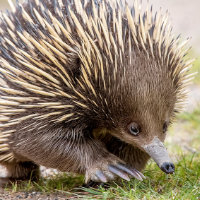
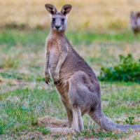
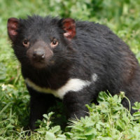
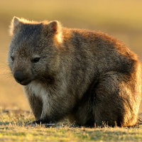
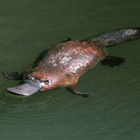
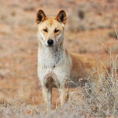

| Animal | Picture | Home | Food | Population | Fun Fact |
|---|---|---|---|---|---|
| Echidna |  | Typically found in most habitats including forests, deserts, grasslands, etc. They take shelter in caves, rock crevices, or by burrowing. |
They usually forage for food at night. Their diet consists mainly of small bugs, such as ants. | 5-50 million | Echidnas are 1 of 2 egg laying mammals. |
| Kangaroo |  | Kangaroos use trees or shrubs for shelter, and are found across most of Australia. | Kangaroos find their food at night, mostly eating grass, leaves, and other plants. | 45 million | Kangaroos are marsupials, and they have pouches to carry their young. |
| Koala | Koalas live in the eucalyptus forests, relying on the trees for shelter and protection. | They primarily eat eucalyptus leaves, and occasionally leaves from other plants. | 100,000 | Koalas sleep between 18 and 22 hours each day. | |
| Tasmanian Devil |  | Tasmanian Devils were once found all over Australia, but are now only found on the island of Tasmania. They live in dens, including logs, caves, or old, abandoned burrows. | They are carnivorous and will eat small animals. They also scavenge for carrion, which they prefer. | 20,000 | Tasmanian devils will eat the entire carcass of an animal, including the bones, hair, and organs. |
| Wombat |  | Wombats burrow in tunnels, which are often very complex and can be quite large. | Mostly feeding on different grasses, wombats usually graze at night. | Less than 1,000 | A wombat's stool is in the shape of a cube; they are the only species known with this characteristic. |
| Platypus |  | The platypus lives in fresh water, making simple burrows. | Their diet primarily consists of worms, insects, and larvae. | 10,000-100,000 | Platypuses are egg laying mammals, similar to the Echidna. |
| Dingo |  | Dingos live in dens, and can either live alone or in packs. | Dingos usually eat small animals, hunting alone or in packs. | 10,000-50,000 | It is estimated that about 1/3 of the dingo population are "hybrids," meaning that they are a cross between dingos and domestic dogs.; |